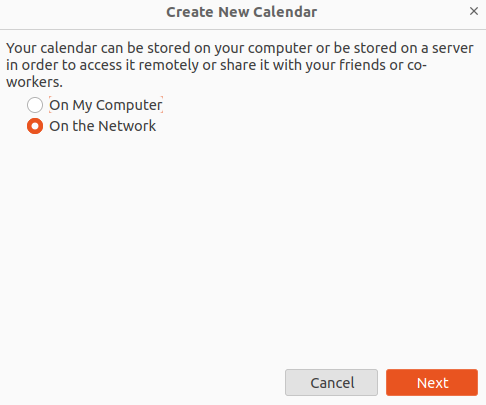
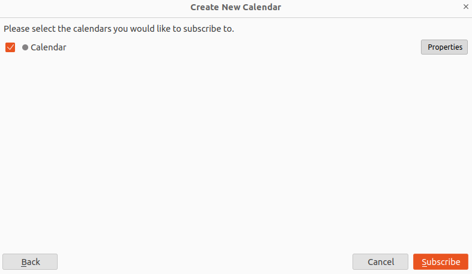

Working with Calendars#
The calendar component allows to keep track of the appointments, meetings, and events you need to attend to and share them with your colleagues.
Beside using NEW, a new appointment can be created in other ways. The first one is with a click of the mouse on the desired date and time on the calendar. The only difference is in the start (and end) date and time: by using the button, they are set to the current date and time, by clicking the calendar they are taken from the clicked date and time.
Alternatively, you can open an existing appointment, clone it, and edit only the relevant details, like for example date and time, without the necessity to create a new one and fill in all the details. This option is useful if you have to schedule recurrent events without a fixed schedule.
When an account is configured with multiple identities, it is possible to choose from which one to send the invitations: the e-mail’s sender will then be automatically filled according the identity chosen.
Attendees, whose presence is either mandatory or optional, can be added by writing their e-mail address. If the attendee already is not available or has some overlapping appointment, its e-mail address will be coloured and a message will be shown. This improves and makes easier the creation of events.
In case the invitation was not sent or if something went wrong, the event will show up in the calendar, but marked with a red icon. The attendee can propose a new time. In this case, new e-mail will be generated and sent to the other participant to inform them of the change.
When right-clicking an event in the calendar, different actions can be carried out: open it and show all participants and details, edit, copy or move it, and its original, plain text version, can be shown.
Additionally, a mail-tags can be added to any calendar event and the event itself can be (tentatively) accepted or declined
Searching for events is easy: insert a search string in the quick search bar to retrieve a first batch of results. By default, all matches in the past and future 30 days are shown. To broaden or restrict the search, click the ADVANCED FILTER bar and select the new start and end dates using the date pickers. Optionally, also add more keywords to search.
Configure a CalDAV CLient#
Adding a Carbonio calendar to your favourite CalDAV client is straightforward and requires only a few steps. The procedure is almost identical on any client; in the box at the end of this section we mention which are the differences.
In this scenario, the user john.smith@example.com wants to configure in Mozilla’s Thunderbird a calendar called Calendar on the domain mail.example.com. In the remainder, replace these values with suitable ones.
On your client, go to the Calendar and select New Calendar…. Choose On the Network
{kind=link}
Provide the Username and the Location, which has format
https://<domain>/dav/username, so
https://mail.example.com/dav/john.smith@example.com
{kind=link}
You will be then presented a list, from which to choose Calendar.
You are now done! the calendar will show up in the list of your client.
{kind=link}
CalDAV is a standard protocol and therefore the data required to set up a client are a username, an URL, and the name of a calendar. The only difference is that some client requires that the calendar’s name be part of the URL, so you might need to provide https://mail.example.com/dav/john.smith@example.com/Calendar as the URL.